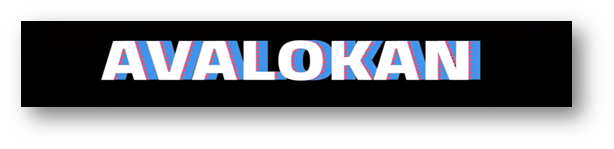

About us : QtPi was established in 2016 and since then it has collaborated with 40+ schools, providing training in Robotics and STEAM. QtPi has achieved significant results across the schools it is collaborating with by providing not just theoretical knowledge but also by providing practical and hands-on experience with the kit provided by it. In 2019 QtPi had stepped in Coorg by collaborating with one of the prestigious schools,
BHARATHIYA VIDYA BHAVAN KODAGU VIDYALAYA
- Vision : "Our vision is to make children think innovatively and come up with various solutions to the day-to-day problems using technology and Robotics, Inherit the knowledge and apply it in various fields and come up with distinct and innovative ideas to improve the quality of life and for the betterment of society in a sustainable way".
- Mission: "To introduce emerging technologies in Robotics and make students come up with their own ideas and projects based on their learnings, promote e-learning pedagogy and lead the teachers and students towards a better teaching learning process."
- Moto: "Our motto is "Take on the world!!" As we always encourage our students to dream big, we wish to instil the quality of aiming high in our children's minds."
To Know about [QtPi Robotics] (https://www.qtpi.in/)
.
students also came up with innovative ideas and built projects such as automating their classroom lights, building an elephant security system and many more that would address local problems. Here are some visuals.
The Robotics Team BVKV has come up with a project named "Elephant Security". This project is to help the people, especially farmers who stay in Coorg . They are great sufferers of the onslaughts of elephants. The elephants enter their farms in search of food and destroy the farm. Our "Elephant security" project alerts the farmers before the elephants enter the farm. This project is done by the students of grades 7 and 10 . The project works by alerting the farmers of Kodagu district with the help of a buzzer thereby helping them to avoid the onslaughts by the elephants .
The "Elephant security" project alerts the farmers before elephants enter the farm thus loss of crop and life can be avoided . In this project ultrasonic sensors are installed across the boundaries(fence) of the farm, so that it can detect the movement of the elephant(s) within a specified distance, a buzzer(we can use RGB with a buzzer) is also used to alert the farmers.
If an elephant passes near the fence the ultrasonic sensor will detect and buzzer will alert us so that the farmers can take the necessary actions to avoid the menace.
The students who participated in this event were:
Track Rc-race is a competition between 2 cars. It aims to be the first global championship for autonomous cars . Usually they have to beat other robots in order to become the best one.
Children enjoyed playing this race and parents were also very curious to know about this project. They had lots of fun playing this track rc race.
Curious parents enquiring about the working of the projects: Home Automation and Elephant Security
QtPi conducted a Badge Design Competition in July to identify QtSTAR Team and the winners from our school are:
Star Teams for the Academic Year 2019-2020
THAPASHA, MOURYA, TANAK BOPPANA, BOJAMMA
VIHAN, DANYAL, ASHNA AADYA
Aditya,Veeksha,Lakshya,Suheb
Aarcha,Dharmik,Dev chinnappa,Yashika
Manish,Raghu vamshi,nanaiah,Samay
Daiwik,Dhawan,Jithesh karthik,Vishnu
Amshul, Biddappa, Belaku, Sonal
Riddi, Sahana ,Sneha, Tanvika
Darshan, jack paul, Abhishek
Arya,Dabayna,Sahal,Tejaswi

Childrens were very happy to participate in the quiz competition . It was a game to test the knowledge of how much they had understood the different projects that they had learned.
Children identifying the different types of blocks

Bharatiya Vidya Bhavan Kodagu Vidyalaya conducted Avalokan Science Fair on October 5th 2019. Students displayed various robotic projects. For the first time, students created Elephant Security and Track RC car race. The people who all attended the science fair enjoyed playing with Track RC- race. Parents and teachers were very happy with the various presentations.
Projects Presented by the Students
· -Soccer Bot
· -Voting Machine
· -Track RC race
· -Elephant Security alarm
· -Smart Tap
· -Smart Street Light
Minister of Primary & Secondary Education and Sakala S. Suresh Kumar inaugurated AVALOKAN – SCIENCE FAIR and Robotics.
Minister of Primary & Secondary Education and Sakala S. Suresh Kumar inaugurating Robotics PROJECT
TWO Robot CARs ready to start RACING
|
|
| |
|
|
|
WALKING ROBOTS DONE BY CHILDREN
Lower grades busy building robot structure with Q bits
Walking scrubber with sprinkler made by eighth standard students.
Children display their creativity by drawing the structure of robot